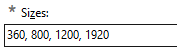
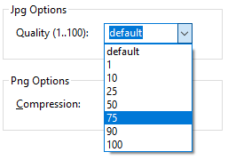
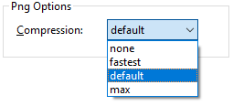

Image Resize is a program for bulk resizing and watermarking of JPEG and PNG images.
Capabilities
Incapabilites
The program needs at least three informations to work:
Optionally a watermark file can be chosen to be printed at any place and at any size to each resulting image.
Image Resize can resample a list of source files. The list consists of fully qualified filenames and can be entered
The list can contain .jpg files and .png files. The filenames will be retained. Relative pathes are based on the programs working directory.
A destination folder is required. You can enter it manually or browse it with
If you enter multiple destination sizes, then you should enter the placeholder %SIZE% in the path, where Image Resize will insert the size in pixels. If multiple sizes are entered and the placeholder is missing, it will be appended automatically.
Image Resize can create mutliple resolutions for each source file. Enter
a list of sizes just by appending the additional sizes with commas.

You can enter all sizes you want. The buttons beneath the list are only suggestions.
Change the list manually, by pressing the suggested size buttons or with the clear button . To remove a single size, double-click the size and press the clear button, or press the appropriate suggestion button again.
You can control the degree of compression for either the JPEG format or the PNG format.
For JPEG encoded files a better quality results in larger files (lower
compression) of the destination files. 75 to 90 percent are good choices.

In the case of PNG files there are 4 compression degrees possible - none,
fastest, default and maximum. The quality of the resulting file is always
the same, because PNG compression is lossless. The drawback of a maximum
compression is the the effort of compression/uncompression.

A watermark is a semi-transparent small image, that adds a copyright note or whatever to your images. The image must exsist as a PNG file and can have an alpha channel, which means transparency. When printing the image an additional transparency can be entered. 20 to 30 percent is good for a discreet appearance, from 50% above the watermark becomes more visible.
Check this check box to enable watermark printing.
Enter or browse a PNG file which will be scaled and printed to all destination images.
Usually you have to create only one watermark file for all the destination images sizes, because the size is in percent and the watermark will be stretched to the right size. So its ok to create a watermark file with a high resolution, lets say 400px width.
There is a way to
You can create a watermark image with
You can use transparency, but keep in mind, that Image Resize allows an overall opacity, so you dont have to consider the printing transparency.
Its a good idea to have any glow, shadow or outline effect for a better
contrast on dark and bright backgrounds:
The watermarks size is the width in percent of the destination image.
An opacity of 0% makes the watermark invisible, an opacity of 100% makes it fully opaque. A value of 40% is a good one.
| 10% | 20% |  | |
| 30% | 40% | ||
| 50% | 60% | ||
| 70% |  |
80% | |
| 90% | 100% |